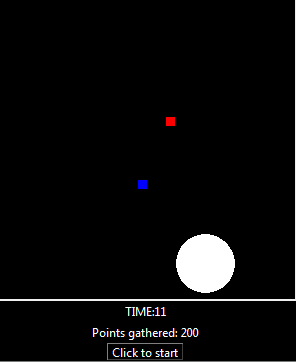
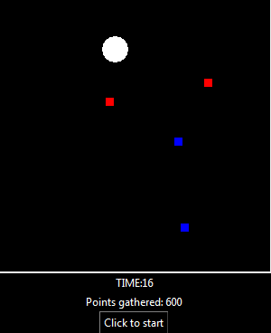
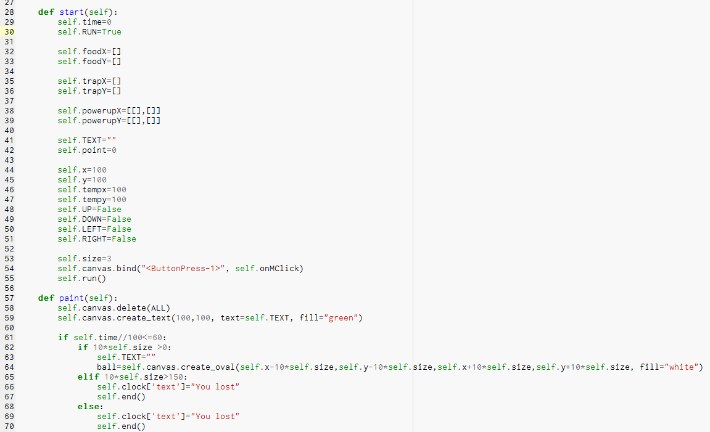
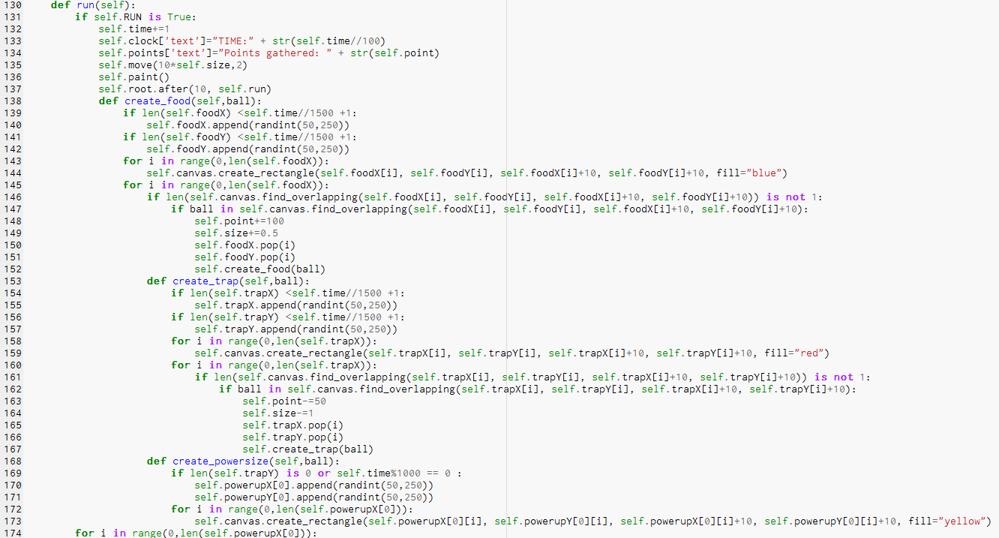
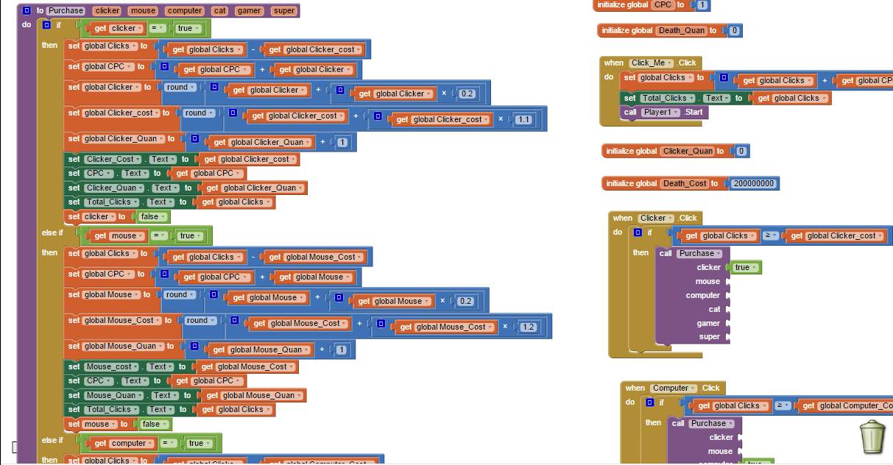
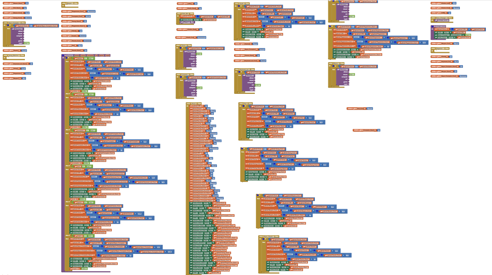

Welcome to my website!
This is about my latest python project, a game where you are a big dot... Chasing little dots.
In this game, you are a large circle, and you click in the direction you want to move, you bounce around trying to get all of the other smaller circle/square things and when you do you get points. There are also power ups that allow you to grow and speed up.
I had a lot of fun doing this project, having to figure things out by myself presented a real problem for me, but with some problem solving and a little(a lot) help from the internet, I got it done.
You can get to my project by clicking here!  
These are a few pitures from my game.
This game was by far took the longest time to make and is the longest program I have ever made. The code is a little long...
These are 2 snipits I took of the code.
 Here was our next project, making an android app using MIT's app inventor program.
We were inspired by cookie clicker and decided to make a cookie clicker like game.
In this game, there is a large grey bar running across the screen that says Click Me, and guess what?...... You click it.
There are different powerups that you can buy in the game, some that click automaticly for you and others that increase the value of your click.
Here are some snipits of our code.
Here is all of the code for the game.
You can download my app on an android device by clicking here!